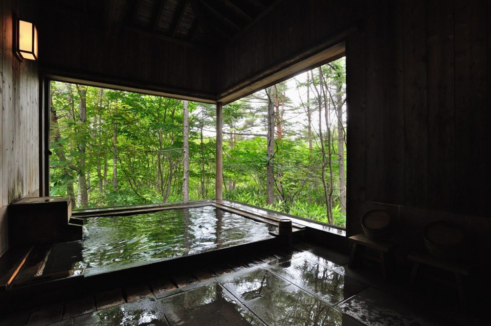
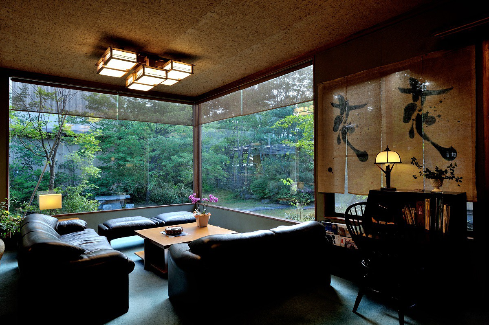
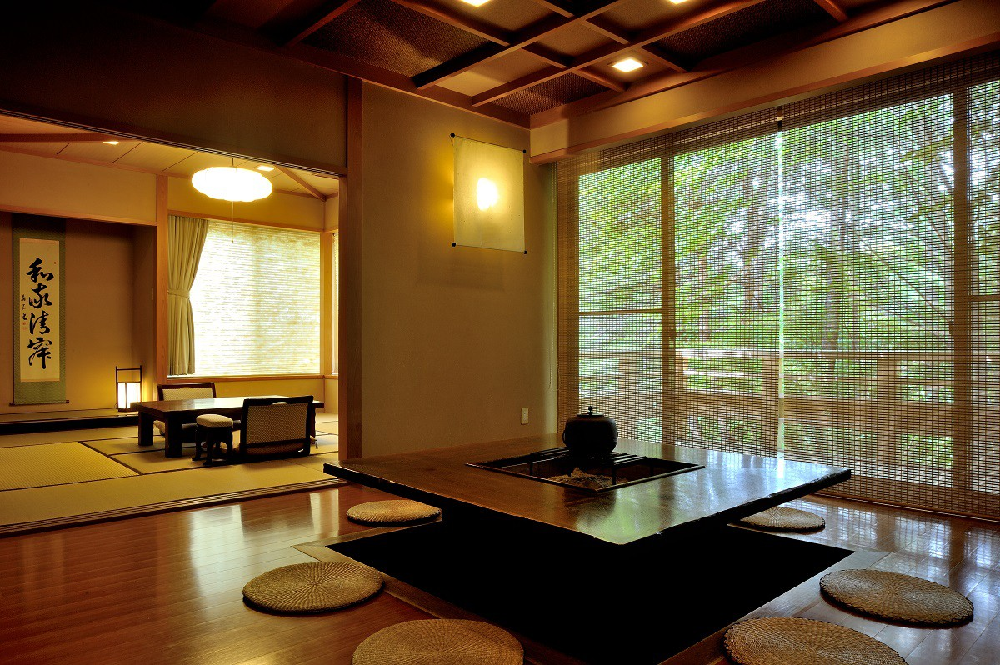
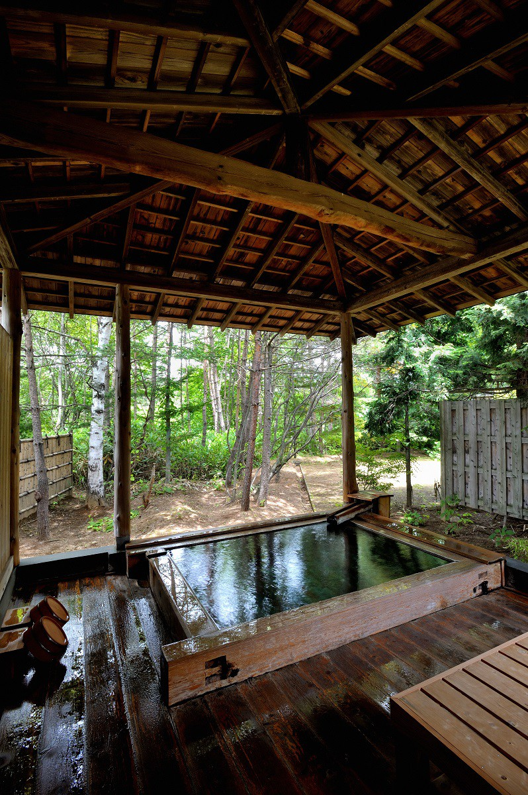
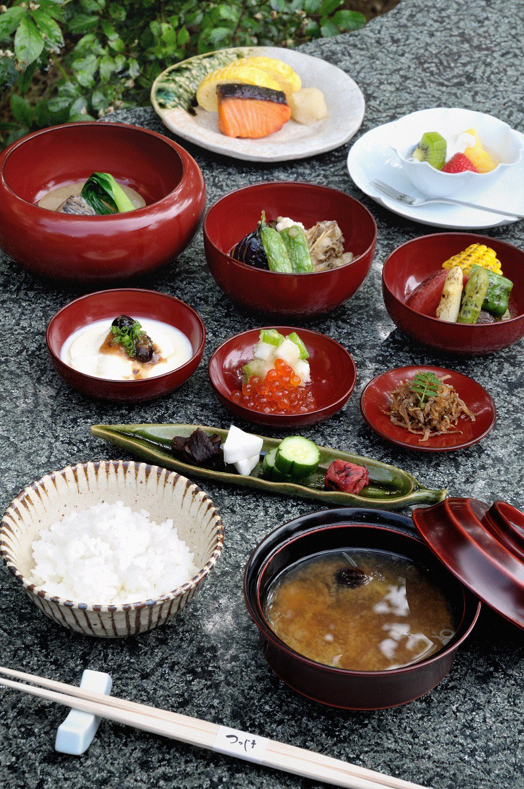

Префектура Гумма · Кусацу · рёкан
«Цуцудзи-тэй» в Кусацу: купальня в лесу с водой из юбатакэ

Кусацу считают одним из трёх знаменитых онсэнов Японии, а оценить его воду без спешки помогает подходящий рёкан. Маленький рёкан «Цуцудзи-тэй» даёт гостям на час целую лесную купальню.
Онсэн
Вода, которая действует
Кусацу в префектуре Гумма издавна считается одним из лучших онсэнов страны. Стоит назвать его, и каждый вспоминает юбатакэ в центре городка, над которым клубами поднимается пар. Напор горячей воды здесь такой, что поначалу просто теряешь дар речи. О самом юбатакэ и прогулке по источникам рассказывает статья «Онсэн Кусацу».
Автор этих строк признаётся, что к качеству воды обычно равнодушен. Если источник без рециркуляции, хорошо, но и оборотную, и подогретую воду он не отвергает: любит, по его словам, любой онсэн без разбора. И всё же Кусацу для него стоит особняком. Достаточно коснуться воды, чтобы почувствовать, что она «работает», а когда лежишь в ней, тепло медленно, понемногу проникает внутрь.
Вода Кусацу кислая, серная, с алюминием, сульфатами и хлоридами. В рёкане её не подогревают, не разбавляют и не пускают по кругу: она течёт прямо из источника.
Рёкан
Дом за кустами азалий
«Цуцудзи-тэй» стоит немного в стороне от юбатакэ, сердца Кусацу. Это очень маленький рёкан, всего 10 номеров. «Цуцудзи» по-японски азалия, и вход действительно окружён её кустами. У порога снимают обувь, переводят дух в небольшой гостиной и идут в номер.

Большой компании подойдёт отдельный флигель, тем, кто едет вдвоём или один, лучше главный корпус. Во флигеле «Ирори-но ма» в центре стоит очаг ирори, вокруг него две комнаты на татами, в 12 и 8 татами, и своя купальня под открытым небом.

Автор всегда останавливается в главном корпусе, и причина у него одна: только здесь водой Кусацу можно пользоваться в одиночку. Рёкан окружает естественный лес площадью около трёх тысяч цубо, это примерно гектар.
Купальня
Час наедине с «Тама-но ю»
Главная причина приехать сюда это частная купальня «Тама-но ю». На неё записываются и получают её на час бесплатно, но только если живут в главном корпусе. Автору, который в бане обычно не задерживается, хватает и получаса.
Частной её можно назвать лишь условно: в другом рёкане такой была бы открытая купальня при общей бане. Просторная раздевалка, просторное место для мытья и, конечно, просторная ванна, а за окнами густая зелень. Вода здесь из источника юбатакэ, и запах серы, который будто обещает исцеление, запоминается надолго.
В номерах главного корпуса к тому же есть маленькие ванны на одного, и в них тоже без остановки переливается вода из источника. Ими можно пользоваться в любое время.

Общие купальни «Урара-но ю», по одной для мужчин и женщин, наполняет вода из другого источника, Бандайко. Ванна из японского кипариса стоит под открытым небом среди деревьев. Источник у неё не тот, что у «Тама-но ю», так что окунуться стоит в обе.
Кухня
Стиль «Цуцудзи-тэй»
После онсэна ждёт ужин. Это не киотская кухня и не местная деревенская, а скорее стиль самого дома. Опытный повар выбирает продукты и готовит их легко, без лишнего. Блюда идут одно за другим, без попыток удивить, но в каждом чувствуется работа, и действуют они так же, как здешняя вода: тихо и постепенно.

После ужина можно посидеть в общей гостиной, а потом вернуться в номер. Дальше только тишина, ради которой и едут в такие небольшие рёканы.
«Цуцудзи-тэй»
- Адрес
- префектура Гумма, уезд Агацума, Кусацу, Кусацу, 639-1
- Телефон
- +81 279-88-9321
- Номера
- 10
- Цены / Вход
- ночь с ужином и завтраком от 32 550 до 64 950 иен с налогом (2019 год)
- Заезд / выезд
- 14:00 / 11:00
- Как добраться
- от станции Наганохара-Кусацугути линии JR Агацума автобусом JR до конечной «Кусацу Онсэн» 25 минут, затем 15 минут пешком (есть трансфер по предварительной записи); на машине от развязки Сибукава-Икахо скоростной дороги Канэцу около 1 часа 30 минут
Фото: Ко Миядзи.